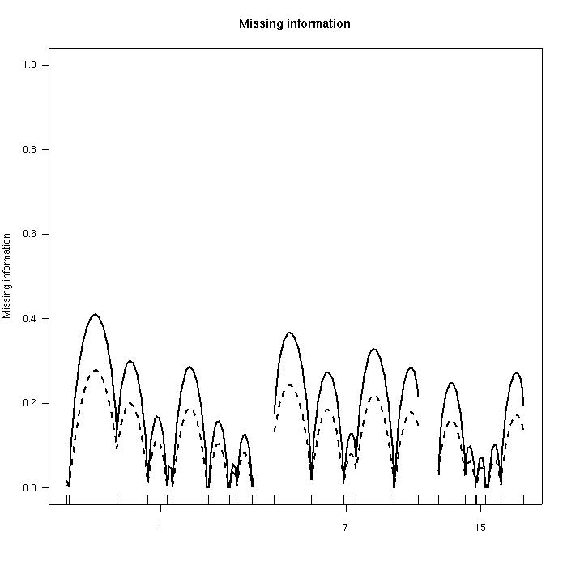

[ Home | Download | FAQ | News | Bugs | Sample data | Tutorials | Book | Manual | Citation ]
Proportion of missing genotype information, calculated in two ways (using the concepts of entropy and of variance). Values of 0 correspond to complete information; large values indicate regions with little marker data. The ticks below indicate the locations of genetic markers.

[ Home | Download | FAQ | News | Bugs | Sample data | Tutorials | Book | Manual | Citation ]